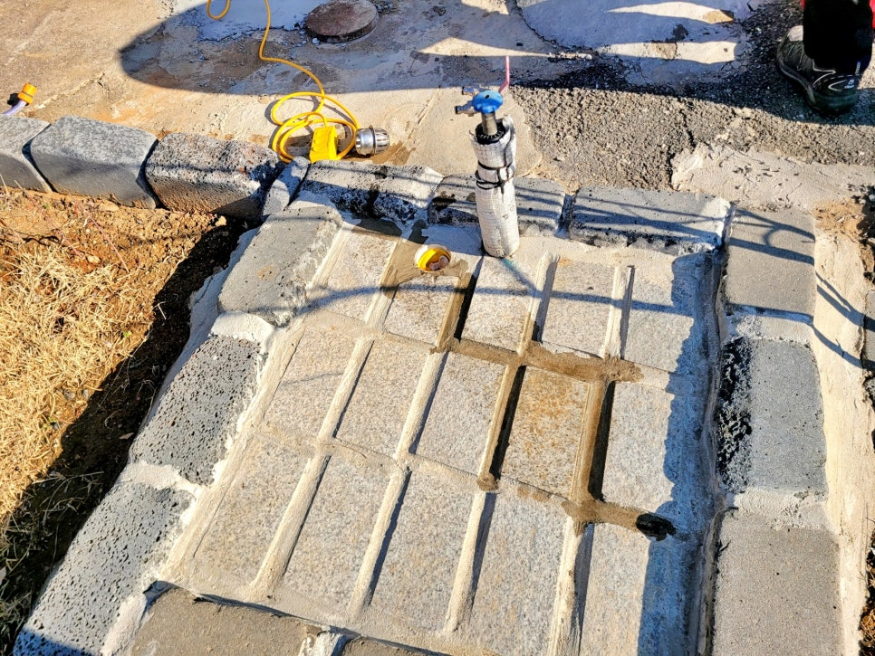
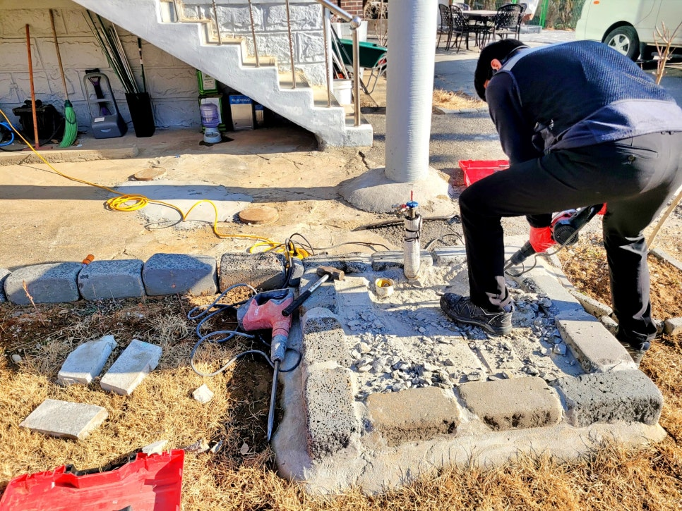
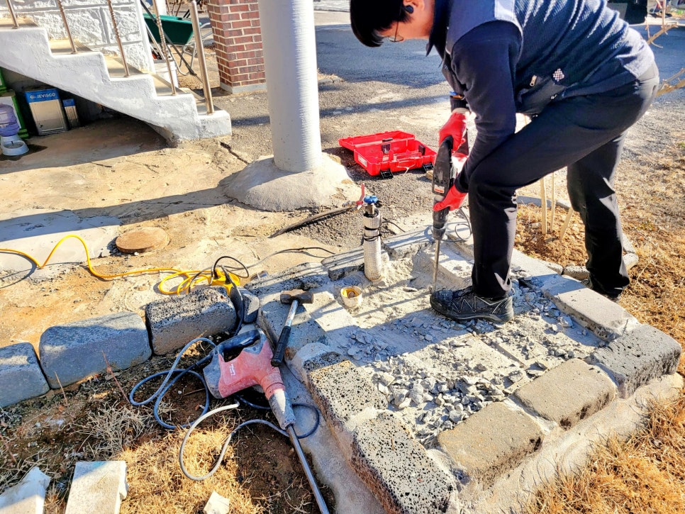
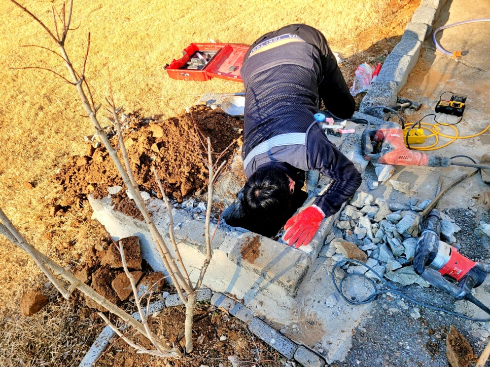
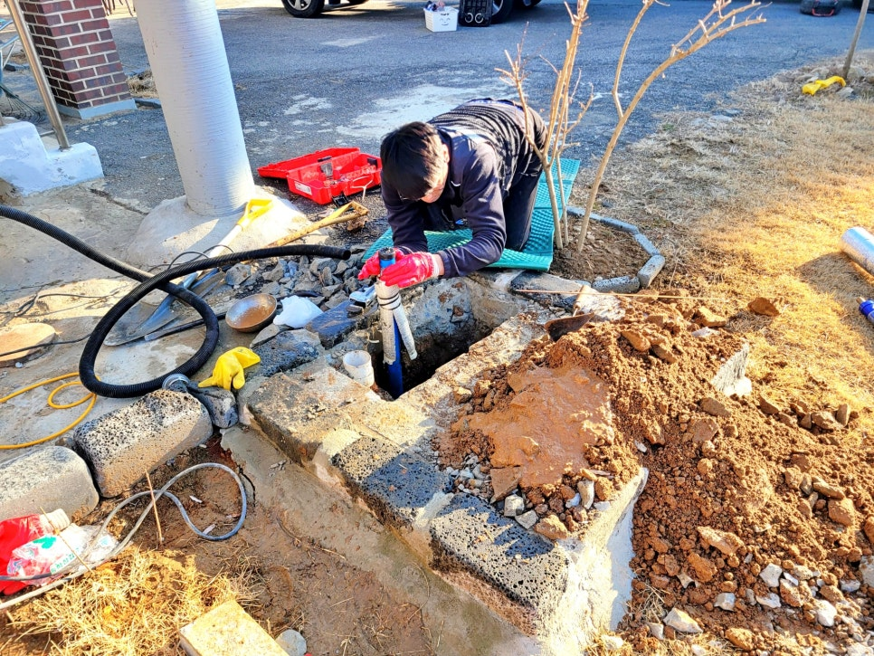
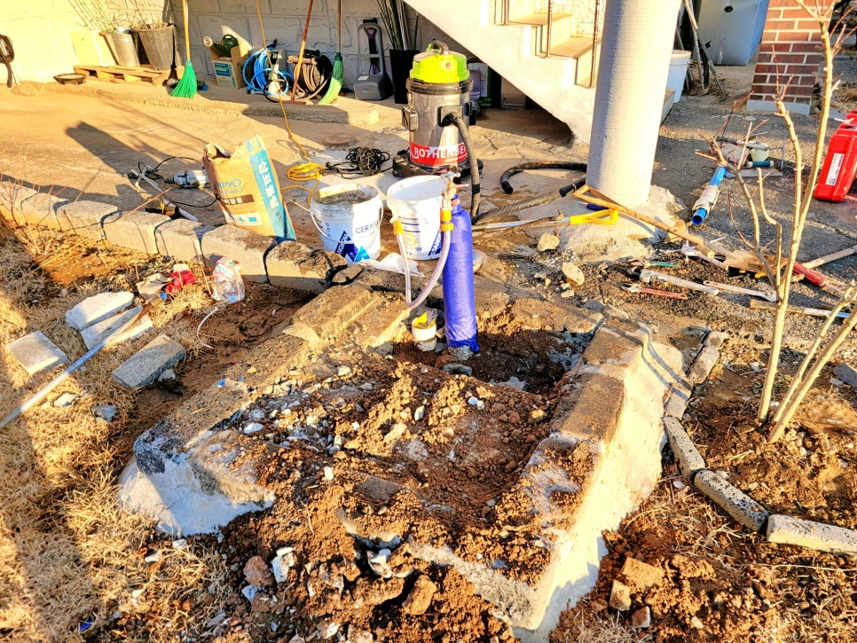

🏠 화성 향남읍 부동전누수 교체, 수도요금 급증 원인 해결함
화성 향남 하수구막힘 전문 시공 후기

📋 작업 개요
- 위치: 화성 향남, 향남, 화성
- 서비스 유형: 하수구막힘, 배관막힘, 누수수리, 설비공사
- 작업 일시: 2026. 3. 11. 17:17
- 업체명: 하수구수사대 (010-5615-2118)
🔍 문제 상황
화성 향남읍 부동전누수 교체공사,
수도요금 두 배 청구된 원인 해결함.
환영합니다.
화성시 향남읍 부동전누수 교체전문
하수구수사대 인사드립니다.
이번 현장은 향남읍 전원주택 마당에
설치된 부동전에서 누수가 발생해
수도 계량기가 계속도는 현상과 함께
평소보다 두 배 가까이 수도 요금이
청구되는 문제로 출동한 사례입니다.
향남읍 주택에 설치되어 있던 노후 부동전
화성 향남읍 부동전누수 현장에
긴급 출동해 보니 오래된 부동전
주변 바닥에 물이 샌 흔적을 볼 수
있었는데요.
그렇다면 과연 부분 수리가 가능한지
아니면 전체 교체를 해야 하는지를
지금 바로 소개하겠습니다.
1. 향남읍 마당 부동전누수 교체
지금까지 부동전누수 원인들은
겉으로 보이는 수도 꼭지 부분보다는

🔎 원인 분석
💡 전문가 진단: 화성 향남읍 부동전누수 교체공사,수도요금 두 배 청구된 원인 해결함.
땅 속 깊숙한 곳에서 문제가 시작된
경우가 많은데요. 보온재를 벗겨내자
예상대로 아래쪽 안쪽이 물이 젖은
것이 확인됐습니다.
이번 현장은 부분 수리가 불가하다는
판단이 섰고요. 결국 고객님께는
부동전 자체를 새것으로 교체하는
방향으로 상세하게 설명해 드렸습니다.
참고로 화성 향남읍처럼 겨울 한파의
매서운 바람을 자주 맞는 지역은
추운 날씨로 인한 수축과 팽창이
반복되면서 생각보다 훨씬 빠른
속도로 노후화될 수 있는데요.
잠시 후
고객님의 동의하에 새것으로 교체를
하기 위해 작업을 시작했으나, 이번
현장은 일반 흙바닥이 아닌 단단한
블록과 시멘트 몰탈로 마감된 구조라
작업 난이도가 한층 더 높았습니다.
화성 향남읍 부동전누수 교체 작업은
먼저 블록들을 하나씩 걷어낸 후,
굴착기로 흙바닥이 드러날 때까지
🔧 작업 과정
한참동안 작업을 해야 했는데요.
땅속 깊은 곳에 이르자 부동전 연결
부속은 상당 부분 부식되어 있었으나
다행히도 연결 배관 자체는 양호한
상태를 유지하고 있었습니다.
덕분에 배관 전체를 교체하는 큰 공사
없이 문제가 발생한 부속과 부동전만
정확하게 교체하는 것으로 작업을
마무리할 수 있었고요.
새로운 부동전을 교체 연결한 후에는
연결 부위에 누수 여부와 수압까지
꼼꼼하게 체크해 이상이 없음을
고객님께도 확인시켜 드렸습니다.
원상복구 완료 후 모습
드디어
화성 향남읍 부동전누수 교체 공사
점검이 끝난 뒤, 다시 기울지지 않게
하부 지지대를 단단하게 보강했고요.
수직과 수평까지 완벽하게 맞춰
매립 작업을 진행한 후 철거했던
블록과 바닥 원상복구 시공까지
깔끔하게 마쳤습니다.
2. 부동전누수 교체공사를 마치며
오늘 소개한 향남읍 전원주택에 수도
요금이 급증한 원인은 노후 부동전이
파손돼 발생한 것이고요.
하수구수사대가 긴급하게 출동해
신속하고 정확하게 교체 공사를
마무리해 수도 요금 급증 원인을
확실하게 해결해 드린 사례입니다.
그리고
만약 수도 계량기가 멈추지 않거나
부동전 주번 바닥이 젖는 현상이
지속된다면 지체 없이 전문가에게
점검을 받아보시는 것이 불필요한


✅ 작업 완료
비용 지출을 막는 현명한 방법일 수
있는데요.
그런 현상이 보인다며 전문가인
하수구수사대를 불러 주십시오.
이상으로
"화성 향남읍 부동전누수 교체공사"
시공 후기를 마치겠습니다.
끝까지 읽어주셔서 감사합니다.
#화성전원주택부동전누수 #화성주택부동전누수 #화성부동전교체전문 #화성향남읍부동전누수 #화성전원주택수도요금급증원인 #화성시배관공사




⚠️ 베란다 누수 및 방수 관리 방법
- ✅ 비가 많이 올 때 창틀 주변이나 아래층 천장에 얼룩이 생기는지 정기적으로 확인해 보세요.
- ✅ 우수관 주변 실리콘 마감이 들뜨거나 깨진 틈새가 있는지 손상 여부를 수시로 체크하세요.
- ✅ 베란다 바닥 타일의 줄눈(메지)이 소실되면 그 틈으로 물이 침투하여 누수가 유발됩니다.
- ✅ 누수 의심 증상 발견 시 방치하면 아래층 손실이 커지므로 즉시 전문가의 진단을 받으십시오.
💡 핵심 정리
- 확실한 장비 작업(내시경 점검 및 샤프트 스케일링)으로 원인을 뿌리 뽑습니다.
- 작업 후 1년 이내에 동일한 부위 재발 시 100% 무상 A/S 서비스를 보장합니다.
- 서울 · 경기 · 인천 전 지역에 24시간 언제든 긴급 출동할 수 있도록 항시 대기 중입니다.
❓ 자주 묻는 질문 (FAQ)
🚨 화성 향남 하수구막힘 문제로 고민이신가요?
정확한 원인 진단과 확실한 시공으로 재발 없는 해결을 약속드립니다.
24시간 긴급 출동 | 서울 · 경기 · 인천 전지역 | 1년 내 재발 시 무상 A/S